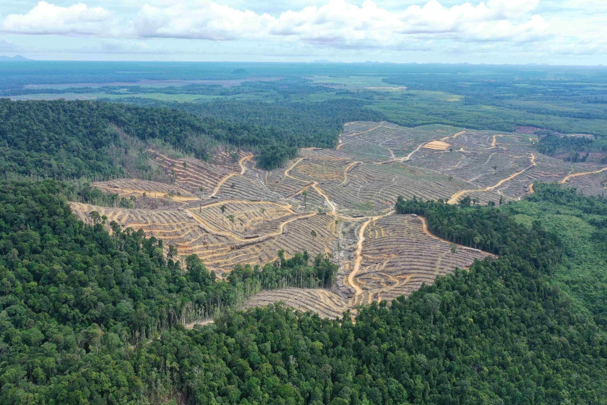

Pulihkan Hutan Kalimantan, Selamatkan Paru-Paru Dunia
Menanam kembali 50.000 pohon di lahan kritis Kalimantan Tengah🌳
Yayasan Bumi Hijau Nusantara
✔ Terverifikasi · Berdiri sejak 2012
R
S
A
M
+2rb
2.341 orang sudah berdonasi
TERKUMPUL
Rp 335 Jt
dari target Rp 500 Jt
67%
Tercapai
2.341
Donatur
Rp143k
Rata-rata
⏳
14 hari lagi tersisa
Berakhir pada 16 April 2026
SEGERA!
Tentang Kampanye Ini
Setiap tahun, lebih dari 1,8 juta hektar hutan Indonesia hilang akibat pembalakan liar dan alih fungsi lahan. Di Kalimantan Tengah, kerusakan ini memperparah krisis iklim, mengancam habitat orangutan, dan merampas sumber air bersih jutaan warga.
Bersama Yayasan Bumi Hijau Nusantara dan komunitas adat setempat, kami menargetkan penanaman 50.000 bibit pohon asli di lahan kritis seluas 200 hektar — disertai pemantauan 5 tahun untuk memastikan pohon tumbuh optimal.
-
50.000 pohon ditanam — setiap Rp 10.000 menanam satu bibit pohon lokal
-
200+ satwa liar kembali mendapat habitat yang aman dan layak
-
12 desa di sekitar kawasan kembali mengakses sumber air bersih
-
300 warga lokal diberdayakan sebagai penjaga dan pemelihara hutan